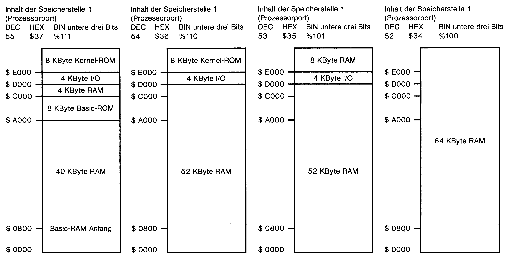
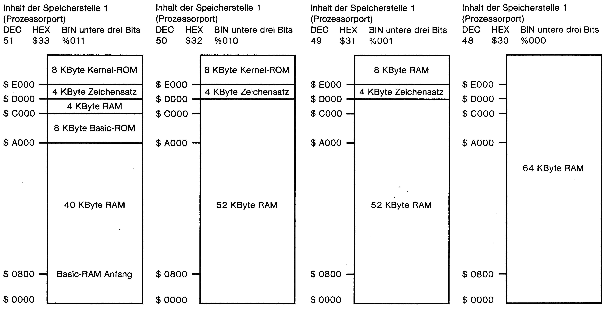

84 KByte Speicher sicher im Griff
Durch einfaches Verändern eines Registers können beim C 64 normalerweise brachliegende Speicherbereiche genutzt werden. Um jedoch einen Systemabsturz auszuschließen, ist es notwendig, die auf diese Weise erzeugten Speicherkonfigurationen zu kennen.
Der C 64 besitzt bekanntlich durchgehend 64 KByte RAM (Schreib-Lese-Speicher = Random Access Memory) und 20 KByte ROM (Nur-Lese-Speicher = Read Only Memory). Jeweils 8 KByte ROM entfallen auf den Basic-Interpreter ($A000-$BFFF) und das Kernel-ROM ($E000-$FFFF). Weitere 4 KByte ROM sind für die Ein-/Ausgabesteuerung des Computers ($D000-$DFFF) zuständig. Derselbe Speicherbereich enthält auch den Zeichensatz. Da der Prozessor des C 64 jedoch maximal 64 KByte Speicher verwalten kann, ist es erforderlich, den darüber hinausgehenden Speicher auszublenden. Der Inhalt der Speicherstelle 1 in der Zeropage zeigt an, welche Speicherbereiche gerade aktiv sind (ROM oder RAM). In diesem Zusammenhang sind lediglich die drei unteren Bits von Bedeutung:
Bit 0 LORAM (Basic-ROM oder RAM)
Bit 1 HIRAM (Kernel-ROM oder RAM)
Bit 2 CHAREN (I/O = Ein-/Ausgabe, Zeichensatz oder RAM)
(Die Bits 3 bis 5 steuern den Kassettenport, Bit 6 und Bit 7 sind nicht benutzt.)
Hieraus ergeben sich acht verschiedene Bit-Kombinationen und somit acht unterschiedliche Speicherkonfigurationen. Im Einschaltzustand enthält die Speicherstelle 1 den Wert 55 (hexadezimal $37, binär 00110111), das heißt, die drei ausschlaggebenden Bits sind gesetzt. In diesem Fall sind Basic-Interpreter, Betriebssystem und Ein-/Ausgabevorrichtung eingeblendet, das RAM unter dem ROM und der Zeichensatz nicht auslesbar (Bild 1).

Bild 2. Basic-ROM ausgeblendet (8 KByte Kernel, 52 KByte RAM, 4 KByte I/O)
Bild 3. Basic-ROM und Kernel abgeschaltet (60 KByte RAM, 4 KByte I/O)
Bild 4. Der Speicher besteht aus 64 KByte RAM. Der Computer ist stillgelegt.
Wird Bit 0 mit »POKE 1,54« gelöscht, ist das Basic-ROM abgeschaltet und das darunter liegende RAM lesbar (Bild 2). Dieser Befehl ist deshalb nur dann von Basic aus sinnvoll, wenn das Basic-ROM zuvor ins RAM kopiert wurde. Andernfalls stürzt der Computer ab.
Der Wert 53 (hexadezimal $35) bewirkt, daß neben dem Basic-ROM auch das Kernel abgeschaltet und gegen das RAM ausgetauscht ist (Bild 3). In diesem Fall stehen dem Anwender auch keine Betriebssystem-Routinen mehr zur Verfügung. Es sei denn, das Kernel wurde zuvor ins RAM kopiert oder ein modifiziertes Betriebssystem geladen.
Enthält das Register den Wert 52 (hexadezimal $34), wird auch der Ein-/Ausgabe-Baustein ausgeblendet (Bild 4): Der gesamte Speicher des C 64 besteht nun ausschließlich aus RAM (64 KByte).
Bei den Werten 51 bis 48 (Bild 5 bis 8) ist – im Gegensatz zu den bisher genannten – Bit 2 (CHAREN) gelöscht. Dies hat zur Folge, daß anstelle des Ein-/Ausgabe-Bausteins der Zeichensatz auslesbar ist.

Bild 6. 52 KByte RAM, 4 KByte Zeichensatz und 8 KByte ROM (Kernel) aktiv (Basic-ROM ausgeblendet)
Bild 7. Neben dem Zeichensatz sind 60 KByte RAM eingeblendet. Der I/O-Bereich kann nicht genutzt werden
Bild 8. Gleiche Speicherkonfiguration wie in Bild 4. Ausschließlich 64 KByte RAM (verfügbar)
Besonders erwähnenswert ist in diesem Zusammenhang der Register-Inhalt 51 (hexadezimal $33). Er ermöglicht (von Basic aus!), den Commodore-Zeichensatz ins RAM zu kopieren (Listing 1). Basic-Interpreter und Betriebssystem bleiben aktiviert (Bild 5). Allerdings ist es vor dem Befehl »POKE 1,51« unbedingt erforderlich, den Interrupt zum Beispiel mit »POKE 56333,127« abzuschalten und nach dem Zurücksetzen (mit »POKE 1,55«) durch »POKE 56333,129« wieder zuzulassen.
Unbegrenzte Möglichkeiten
Vor dem Ausblenden bestimmter Speicherbereiche sollte man sich versichern, daß die im Programm nachfolgend verwendeten Kommandos auch vom Computer ausgeführt werden können. Das gilt insbesondere für Kernel-ROM, Basic Interpreter und den Ein-/Ausgabebereich. So ist beispielsweise das Ändern der Bildschirmfarbe oder die Ausgabe von Tönen bei abgeschaltetem Ein-/Ausgabe-Baustein unmöglich. Bei einer Speicherkonfiguration, die ausschließlich aus RAM besteht, können lediglich Maschinensprache-Kommandos verwendet werden! Diese Speicheranordnung wird zeitweilig von professionellen Textverarbeitungsprogrammen verwendet, die den vorhandenen Speicher optimal nutzen. Basic-Erweiterungen (zum Beispiel »Simons Basic«) verwenden häufig das RAM unter dem Basic-ROM für zusätzliche Kommandos.
Programme, die mit modifiziertem Basic-Interpreter und/ oder Betriebssystem arbeiten (beispielsweise auch der 64'er Checksummer) benötigen den Register-Inhalt 53.
Ein weiterer, häufig anzutreffender Einsatzbereich ist die Speicherung von Zeichensätzen und hochauflösenden Grafiken in dem RAM-Bereich ab Adresse $E000. Das leistungsfähige Grafikprogramm »Hi Eddi« (64'er, Ausgabe 1/85) arbeitet gar mit bis zu sieben Grafikbildschirmen, wobei der gesamte RAM-Bereich ab Adresse $2000 genutzt wird.
Bemerkenswert ist schließlich noch, daß sich das Kernel-ROM nicht ausblenden läßt, ohne gleichzeitig das Basic-ROM abzuschalten. Will man deshalb von Basic mit verändertem Betriebssystem arbeiten – und keinen Eingriff in die Hardware des C 64 vornehmen –, muß der Basic-Interpreter und das Kernel-ROM unbedingt zuvor als Kopie im RAM stehen. Listing 2 kopiert diese beiden Speicherbereiche in weniger als einer Sekunde.
(nj)